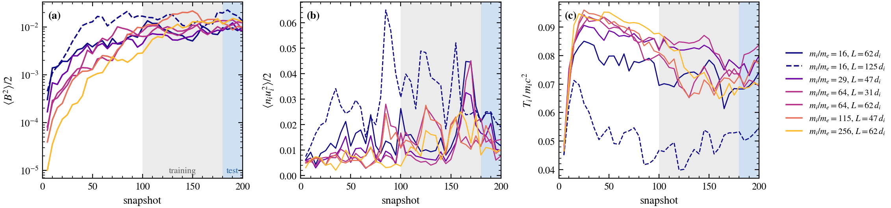

Learning the seams between plasma models
Plasma simulations are stitched together from models that each stop somewhere. Whatever crosses the seam is usually set by a rule of thumb. The bet: learn what crosses the seam from the expensive model, use it inside the cheap one, and know when not to trust it.
Two seams, one recipe
Top: astrophysical turbulence, with Lorenzo Sironi's kinetic simulations. Bottom: a tokamak, with Ben Zhu's TCV edge simulations and the open-source TORAX core code.
The kinetic boxes are dynamos

Each box starts unmagnetized and is stirred. (a) The magnetic field grows by about a thousand times in energy and is still growing in the window we test on: +37% from snapshot 180 to 200. (c) The temperature stays roughly flat because the simulation caps particle momenta, a thermostat.
The fair test of a fluid model is whether it can keep this dynamo going, not whether it matches one frame.
A learned closure beats the textbook rule
The closure predicts how much hotter the ions are across the field than along it, from density, flow, field and temperature. That anisotropy sets the plasma's effective viscosity and its heating. On snapshots, it gets the heating far closer than the standard rule (anisotropy pinned at the instability thresholds), and it transfers to the real proton mass. Interactive slices are on the kinetic closures page.
Running it inside the fluid code

We built an MHD copy of the kinetic box: same box, same stirring, started from a stirred kinetic snapshot, with the closure in the loop. First surprise: the kinetic run survives its strong stirring only because of the momentum cap. MHD has no such cap, and its flows pass the speed of light within two snapshots. So the stirring strength is tuned once on plain MHD to match the kinetic energy, then frozen for every closure.

First look, one snapshot: inside MHD, the learned closure keeps the kinetic run's spread of anisotropy. The textbook rule collapses onto two lines. Second finding: plain MHD lost about half its magnetic energy over the stretch where the kinetic dynamo held its field. That's the gap the closure has to close.
Full runs are on the cluster: three closures × three random stirring histories, scored on field growth, spectra, anisotropy, heating and field-line curvature. running
The electric field MHD is missing

At the ion scale MHD also misses part of the electric field (b). The Hall term, which a fluid code can add for free, accounts for about 90% of it (c). But all of the field-energy loss is in the remainder (d, e), and it's not a simple resistivity: one coefficient matches the average but not where it happens (g), and about a third of the volume gives energy back (h). We're testing whether a second learned closure can capture this. It may turn out to need other data. exploratory
Our TCV edge emulator as TORAX's edge
TORAX simulates the tokamak core fast, in JAX, but stops at the separatrix. It already has a slot for an edge model: it hands over the power leaving the core and the separatrix density, and takes back the separatrix temperature as its boundary. Today that slot holds a simple formula. We will put our TCV foundation model there, trained on Hermes-3 edge turbulence.
- Hook into TORAX. Its edge slot calls any outside model, tested first with a textbook edge formula. building
- Read the separatrix temperature off the emulator. Feed the core's state in as the observed strip at the inner boundary, and test whether the model responds with no retraining. running
- Teach it to respond to the core. Run a GPU JAX-Hermes3 scan of core power, then adapt the emulator with ordinary field-reconstruction losses. next
- Couple, then test against full Hermes-3 at a power it hasn't seen, and on a second discharge held out until the end. next
The trust score ranks well, but is overconfident
| Test set | by model disagreement | at random | perfect ranking |
|---|---|---|---|
| Bigger box, never seen | 0.33–0.35 | 0.48–0.49 | 0.20 |
| Real proton mass, never seen | 0.41 | 0.51 | 0.25 |
Disagreement between independently trained closures points at the right places, most of all on unfamiliar data. But its size is 2–6× too small. Calibrating it so it reads as a probability is what would let it decide when to call the expensive model.